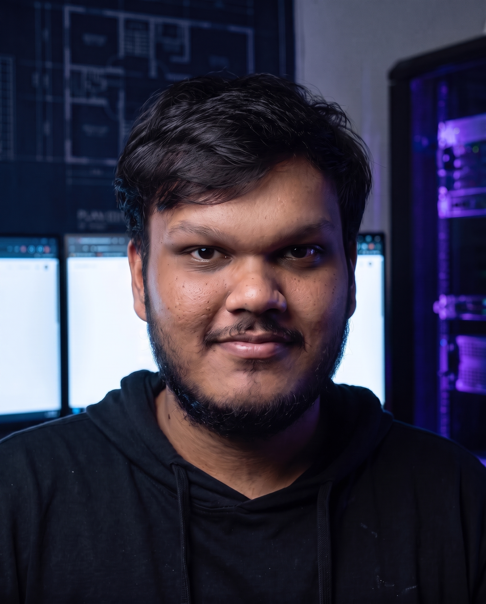

System architecture
Design the shape before the scale makes it expensive.
PRANJAL PANDEY / SYSTEMS ARCHITECT
Every system starts as separate parts.
The work is knowing what must connect.
One concise system. Built to hold.
Research-backed thinking, grounded in real constraints.
I work where architecture, execution, and practical AI meet. The goal is a direction your team can ship, explain, and keep improving.
Different products. The same question: what needs to stay true when the team, the traffic, and the requirements change?
Design the shape before the scale makes it expensive.
Turn unclear problem spaces into reliable delivery.
Move useful AI from a promising demo into a system people can trust.
Founders and teams usually come to me when a technical choice is slowing the business down. We make the pressure visible, choose the trade-off, and leave with a path people can execute.
Separate the real system risk from the symptom that is making the most noise.
Put correctness, complexity, cost, and team capability on the same page.
Turn the decision into an architecture, an artifact, or the first focused build.
The output is clarity you can use.
Not a giant report. A sharper decision, a shared model of the system, and a next move the team can own.
Make the important thing true before making it fast.

Today I work where research, company building, and real systems meet.
That means staying curious about the next hard problem, while keeping the work useful to the people who have to ship it.
The long view is a practice, not a title.
Scroll through the chapters. The tools changed, the questions got harder, and the work kept moving toward useful systems.
Building an enterprise platform for teams to design, run, and improve AI workflows.
Explore Taskflo.ai ↗Specialising in multi-agent systems and computational social choice at IIT Jodhpur.
Started a deeper study of AI systems, their limits, and how to make them work in practice.
Started working with enterprise companies as an independent contractor across architecture and execution.
Helped build Mirakia, extending the work from product ideas into systems used by real teams.
Built the architecture for a hyper-local food delivery platform with mobile apps and backend systems.
Founded the company and worked with multiple clients across products, platforms, and delivery.
Built one of India's first social networking sites and learned that the best systems start with a human reason to exist.
I am interested in ambitious products, difficult systems, and the people willing to think clearly about both. If you are building an AI company, backing one, or trying to make a complex platform work, there is probably a useful conversation to have.
I am not a fit for quick freelance output, speed at any cost, or buzzword-led demos.
Start the conversation ↗Choose the channel that suits you. I am easiest to reach by email, LinkedIn, or GitHub.